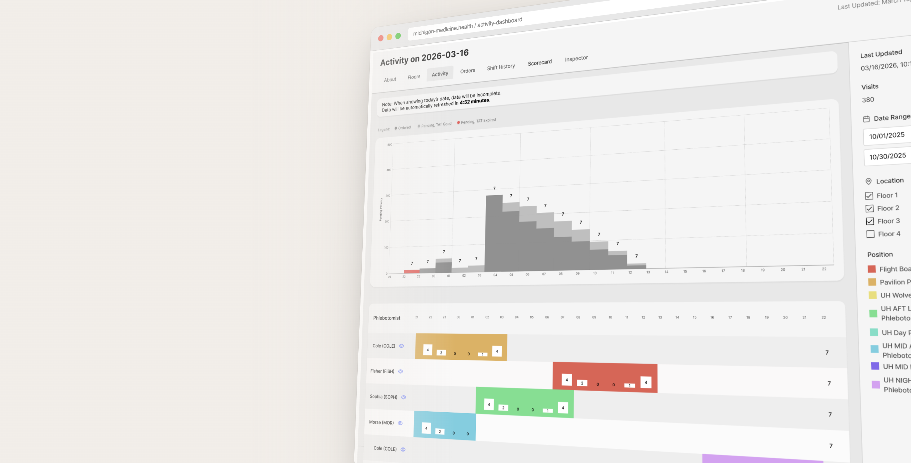
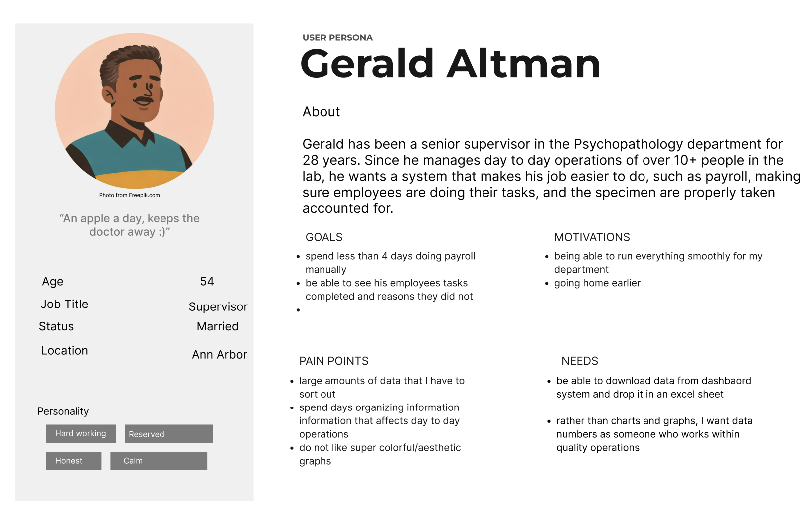
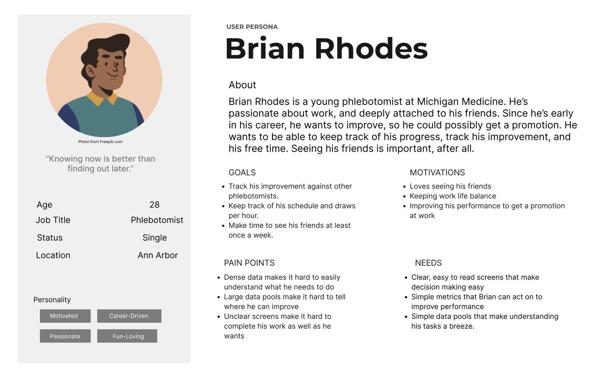
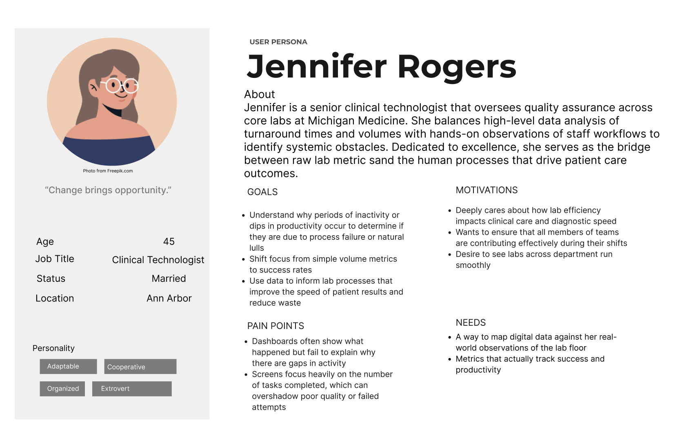
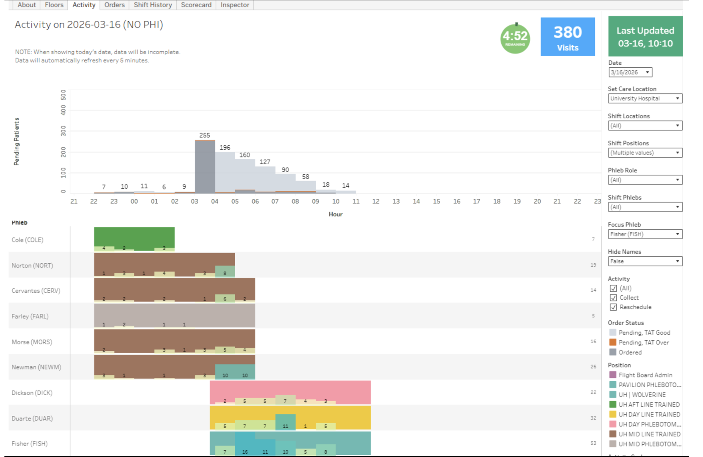
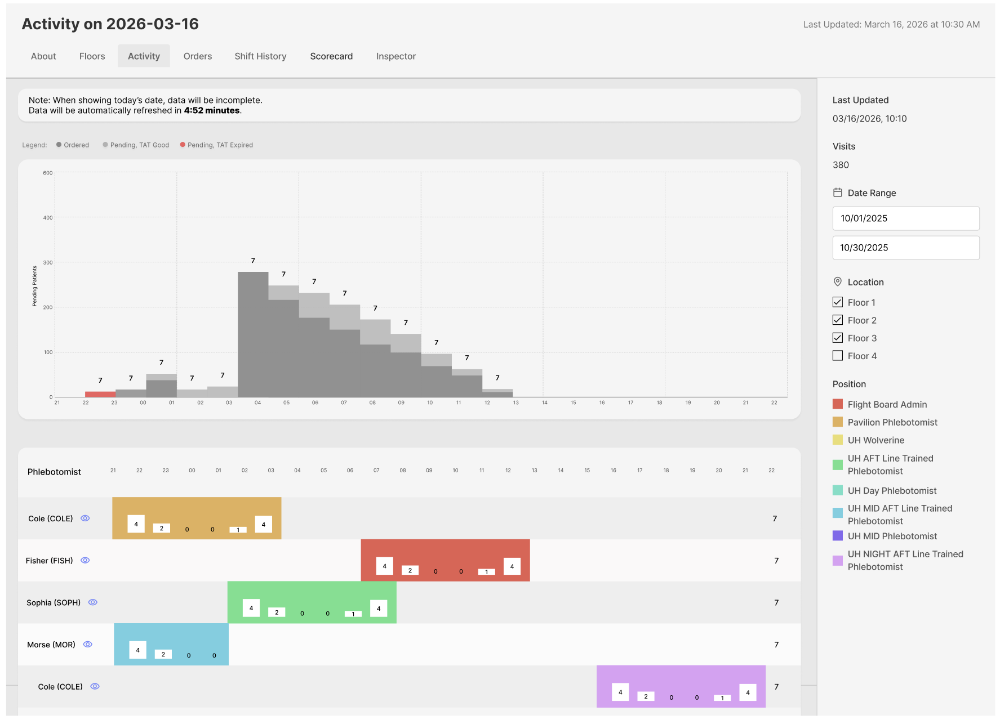
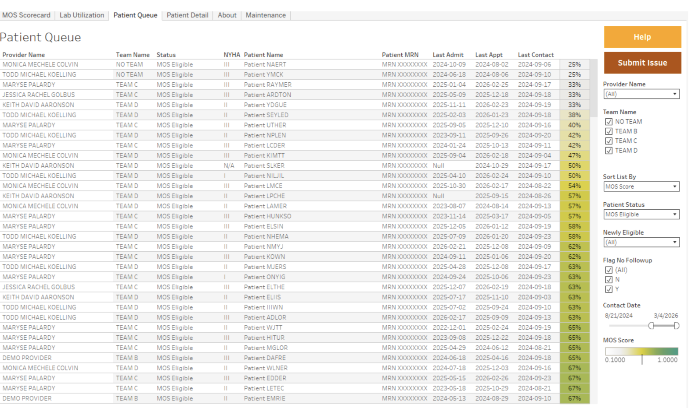
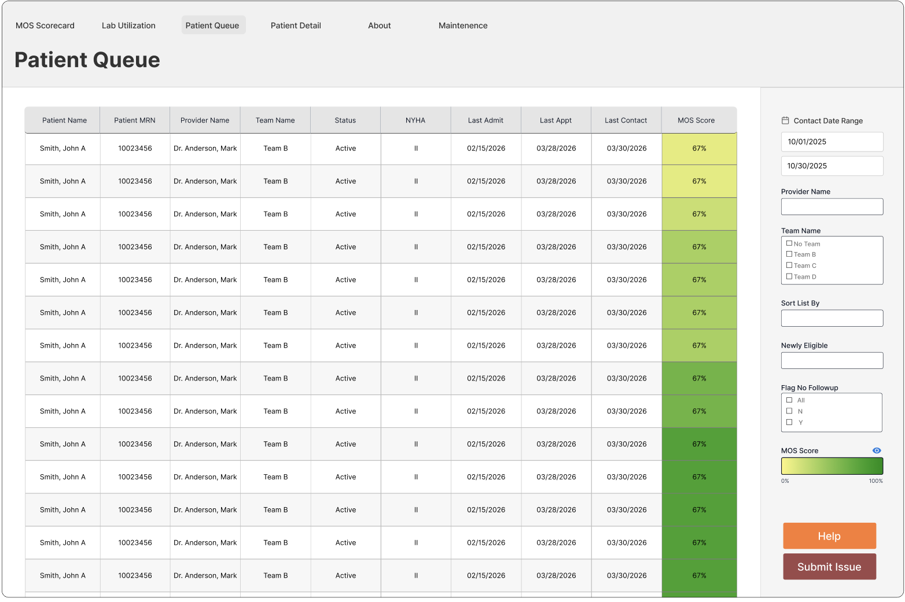
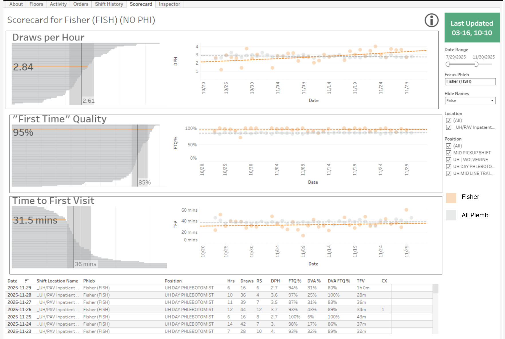
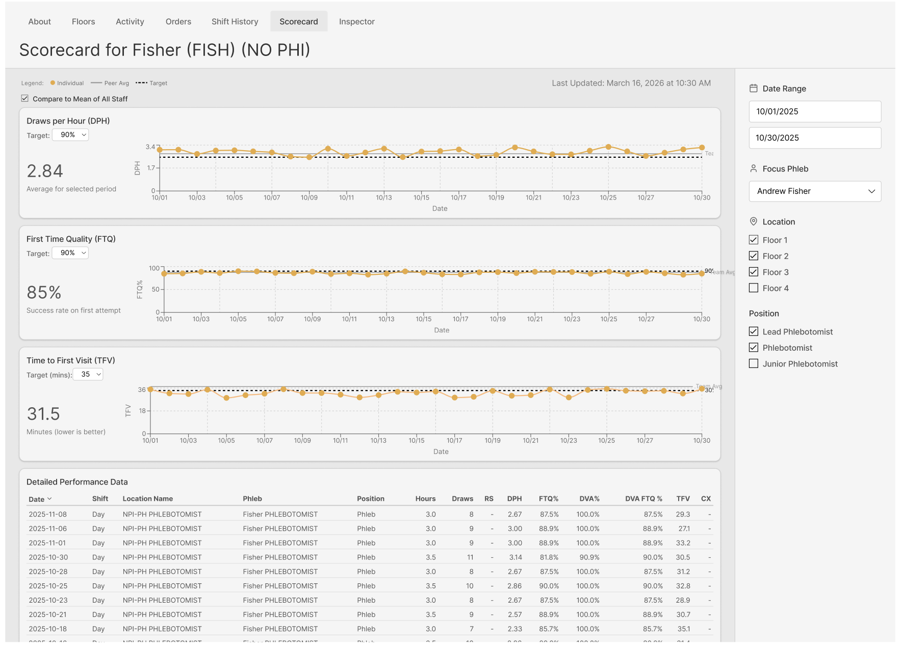

Michigan Medicine Pathology
UX Research · UX Design
Redesigning clinical workflow dashboards to make complex data clearer, easier to interpret, and more accessible for Michigan Medicine Pathology staff.
01
Overview
This project focused on redesigning clinical workflow dashboards used within the Michigan Medicine Pathology Department. The goal was to make complex information easier to understand and help staff find important data more quickly.
Tools
Figma · FigJam
Roles
UX Designer · UX Researcher
Methods
User Interviews · Qualitative Coding Analysis · Affinity Mapping · Persona Development
Timeline
January–May
Focus
Dashboard Systems in Pathology
02
Problem
Michigan Medicine Pathology staff rely on dashboards to monitor workloads, interpret performance data, and make time-sensitive decisions. However, dense information, inconsistent layouts, and unclear visual hierarchy made important information difficult to find and interpret quickly.
Problem Statement
How might we redesign clinical dashboard interfaces to make complex data easier to interpret, enabling faster and more confident decision-making for Michigan Medicine staff?
03
Research
User Interviews
We conducted 7 interviews with Michigan Medicine Pathology staff to understand how users interpreted and interacted with the dashboard workflows, what information they found important, and where they experienced confusion or inefficiency.
Qualitative Coding Analysis
We conducted qualitative coding analysis of the interview questions, transcripts, and participant responses to identify recurring observations, pain points, patterns, and recommendations.
Affinity Mapping
We organized recurring findings into affinity diagrams to identify patterns across participant responses and prioritize key usability concerns.

04
Understanding Our Users
Research revealed different priorities across the roles interacting with the dashboards. We created three personas to represent these needs and help guide design decisions.

Phlebotomist
Needs quick access to task priorities and clear information while working under time pressure.

Supervisor
Monitors team performance and workflow while looking for high-level summaries and actionable insights.

Data Analyst
Needs accurate, detailed metrics with consistent structures and filtering options.
05
Final Designs
The final dashboards focused on improving information hierarchy, accessibility, and the way users interpret key metrics.
Key Decision #01
Make information easier to find
Before

After

Information hierarchy
• Reorganized sections, added visual dividers, and improved labeling to make important information easier to find.
Filtering
• Simplified and reorganized the filtering system and positioned controls closer to the data they affect.
Accessibility
• Refined the color palette and changed work-slot markers to white to improve accessibility and consistency.
Data visualization
• Reduced chart clutter and added contextual indicators, including an eye icon and score explanations, to make performance data easier to interpret.
Key Decision #02
Improve visual hierarchy
Before

After

Table hierarchy
• Reorganized the table to bring patient name and MRN to the front, making key patient information easier to identify.
Visual hierarchy
• Strengthened the hierarchy across titles and data, while improving the MOS score color coding with a more intuitive gradient.
Filtering & interaction
• Added a filtering panel for easier sorting and interaction, explored a more intuitive calendar-based date selection, and improved the visibility of the “Help” and “Submit Issue” buttons.
Patient communication
• Added a follow-up button to provide a quicker way to contact patients.
MOS score clarity
• Added clearer labeling for the MOS score column, including an eye icon above the color bar, to make the metric easier to understand.
Key Decision #03
Make performance data easier to interpret
Before

After

Data visualization
• Removed the total average graph and made daily averages the main focus, with clearer distinction between data lines.
Performance comparison
• Added the ability to compare individual averages against the staff mean and set productivity targets for easier performance tracking.
Graph clarity
• Added brief metric descriptions and a visual key to make the graphs easier to understand and navigate.
Filtering & interaction
• Rearranged the filtering panel to improve visual hierarchy and explored a more intuitive calendar-based date selection.
06
Reflection

This project strengthened my understanding of designing for complex, fast-paced environments where users need to interpret information quickly. Working directly with Michigan Medicine Pathology staff helped me understand how research can reveal different user needs and shape clearer, more accessible interfaces.